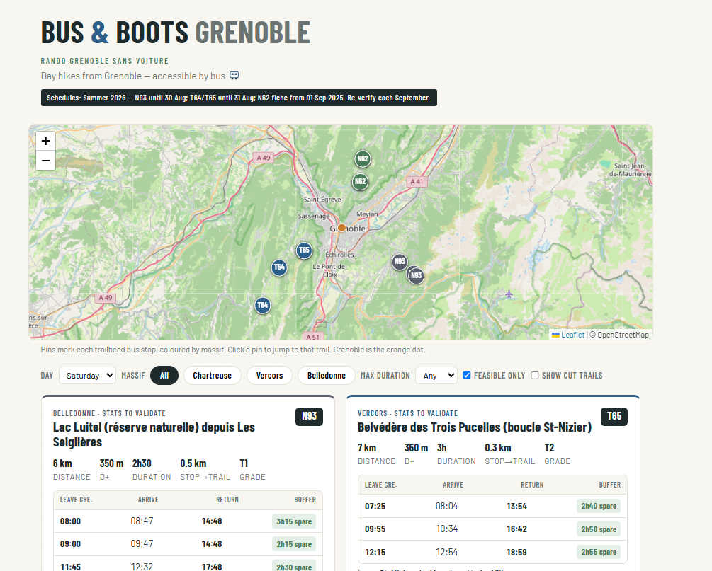
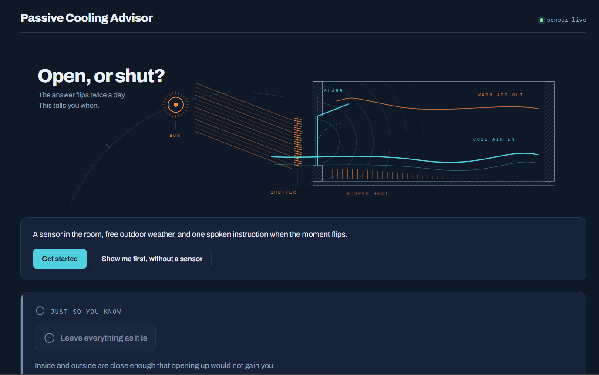
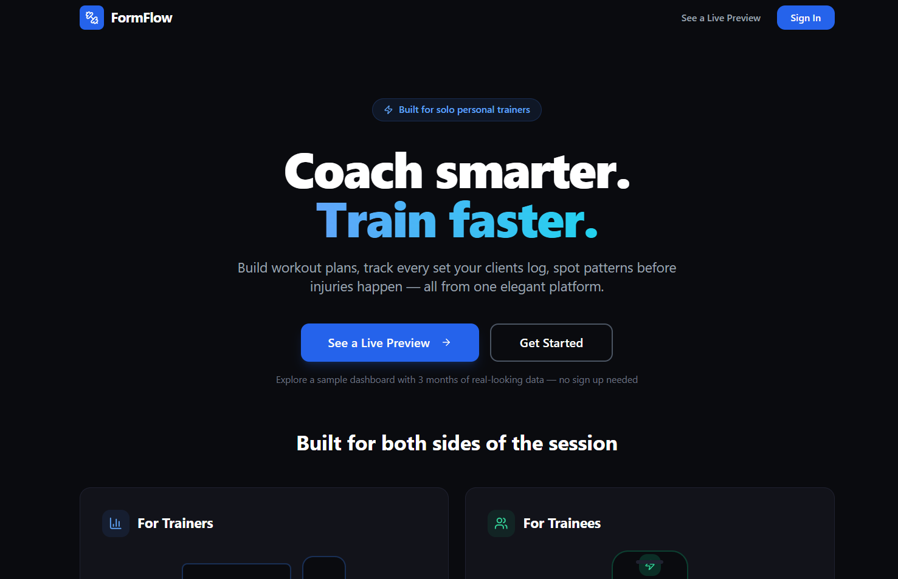
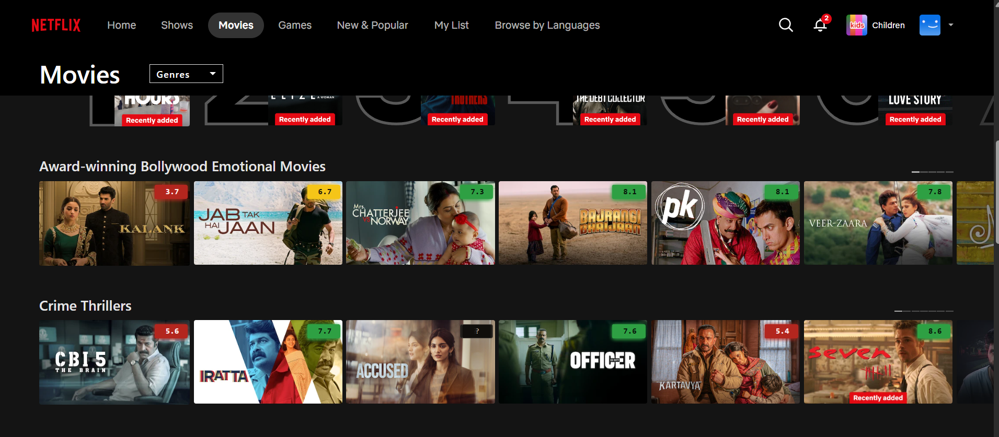

The problem is the work.
The product is what's left over.
I find the problem worth solving, before anything is built. Seven years building B2B software and connected hardware at a global industrial manufacturer.
AI made building cheap. Distribution is getting crowded. The scarce skill now is choosing the right problem.
Problems I worked on
inside a large company
Shipping an industry first, on the original date
I took over a late launch with more than 50 features queued. I cut the backlog by 75% and shipped the industry's first natively connected switchboard on time.
Read the full story →One journey, 7 teams, 8 stages, seen end to end for the first time
I mapped one customer journey across seven teams, then scoped eight AI pilots. One was funded. Seven were paused before they cost anything.
Read the full story →A business that didn't exist, funded by a reframed pitch
I pitched sustainability as a financial hedge against supply-chain shocks. The pitch took ten minutes and won budget for a factory line.
Read the full story →Making a slow process feel fast, in weeks, not years
The permanent fix was a multi-year hardware change. A pattern borrowed from elevator lobbies improved performance by 30% in a few weeks.
Read the full story →Turning quality into a number you can measure
Support tickets only caught the loudest failures. I built an offline-first telemetry layer, so quality could be measured before anything was fixed.
Read the full story →Most of the work happens
before anything is built
I go deep on the problem in days, not quarters. Each step removes a risk before money is spent on building.
Listen
To users, to the team, to the numbers. Fast, and before any opinion.
Take it apart
Find what is really causing the problem, not what is loudest.
De-risk
Cut scope, fund one bet, pause the rest. Test the risky part first, while it is cheap.
Stay close
Stay in the details until it works in the field.
Small tools, shipped solo with AI
When a problem is small enough, I build the answer myself.

Trail Ranker
Day hikes around Grenoble you can reach, and return from, by bus.

Passive Cooling Advisor
Tells you when to open or close windows and shutters.

FormFlow
Trainers assign plans. Trainees log a set in under five seconds.

Movie Assistant
IMDb ratings on every poster, across five streaming services.